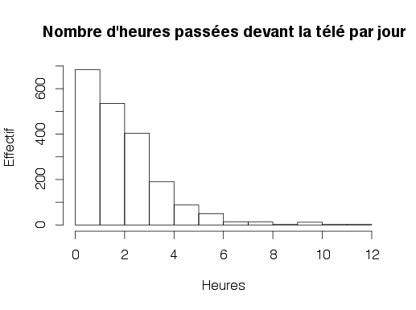
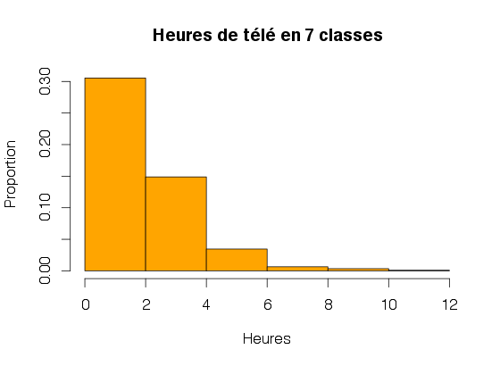
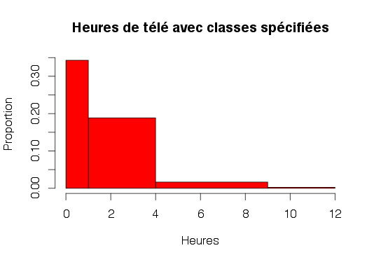
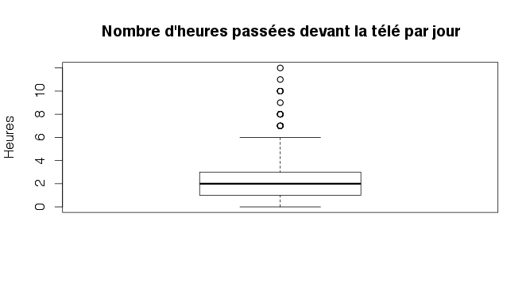
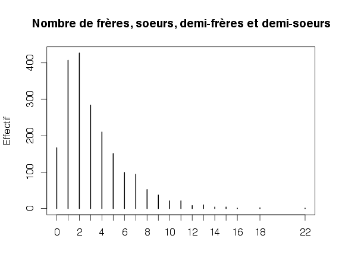
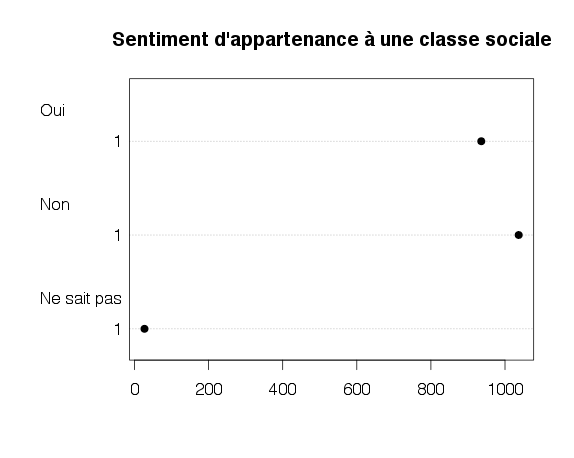
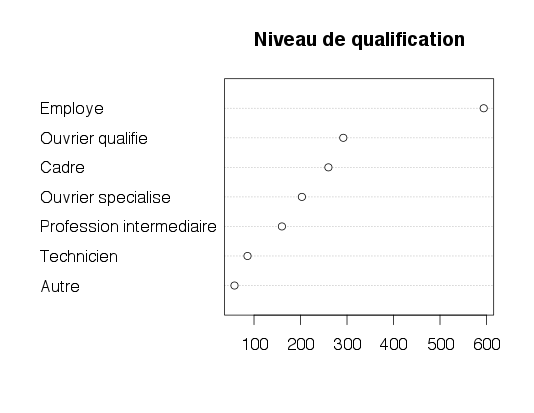

R Project for Statistical Computing
S02
Présentation par Etienne DELAY / @ElCep
Objectifs
- Rappel : manipuler des fonctions simples
- charger, fonctions, arguements, etc ...
- Premier travail avec des données
- inspecter les données
- editer
- analyser une variables quanti
- analyser une variables quali
Rappels
Rappel 1: charger des données
On peut télécharger le jeux de données issu du package questionnr à l'adresse suivante :
https://github.com/ElCep/presentation_R/tree/master/S2/data
data.df<-read.csv("hdv2003.csv",header = TRUE, sep = ",")
Rappel 2: accès à la donnée
data.df$id
data.df[,1]
data.df[,1]
data.df[1,]
data.df[1,1]
Rappel 3 : fonction basic
mean(data.df[,2])
mean(data.df[,2],na.rm = TRUE)
Quelques fonction utiles
c() #construit un vecteur à partir d’une série de valeurs
length() #nombre d’éléments d’un vecteur
mean() #moyenne d’un vecteur de type numérique
var() #variance d’un vecteur de type numérique
min() #valeur minimale d’un vecteur numérique
max() #valeur maximale d’un vecteur numérique
sd() #écart-type d’un vecteur numérique
Premier travail avec des données
Structure du tableau
nrow(data.df)
[1] 2000
ncol(data.df)
[1] 20
dim(data.df)
[1] 2000 20
names(data.df)
...
str(data.df)
Inspection visuelle
edit(data.df)
data.df <- edit(data.df)
Analyser une variables quantitative 1
mean(data.df$heures.tv)
[1] NA
mean(data.df$heures.tv, na.rm = TRUE)
[1] 2.246566
sd(data.df$heures.tv, na.rm = TRUE)
[1] 1.775853
min(data.df$heures.tv, na.rm = TRUE)
[1] 0
max(data.df$heures.tv, na.rm = TRUE)
[1] 12
range(data.df$heures.tv, na.rm = TRUE)
[1] 0 12
median(data.df$heures.tv, na.rm = TRUE)
[1] 2
R> summary(data.df$heures.tv)
Analyser une variables quantitative 2
hist(data.df$heures.tv, main = "Nombre d'heures passées devant la télé par jour",
xlab = "Heures", ylab = "Effectif")

Analyser une variables quantitative 2.2
hist(data.df$heures.tv, main = "Heures de télé en 7 classes", breaks = 7,
xlab = "Heures",ylab = "Proportion", probability = TRUE, col = "orange")

Analyser une variables quantitative 2.3
hist(data.df$heures.tv, main = "Heures de télé avec classes spécifiées",
breaks = c(0,1, 4, 9, 12), xlab = "Heures",
ylab = "Proportion", col = "red")

Analyser une variables quantitative 3
boxplot(data.df$heures.tv, main = "Nombre d'heures passées devant la télé par jour",
ylab = "Heures")

Analyser une variables Qualitative 1
table(data.df$sexe)
table(data.df$occup)
sort(table(data.df$occup))
sort(table(data.df$occup), decreasing = TRUE)
summary(data.df$trav.satisf)
freq(data.df$qualif)
freq(data.df$qualif, cum = TRUE, total = TRUE,
+ sort = "inc", digits = 2, exclude = NA)
Analyser une variables Qualitative 2.1
plot(table(data.df$freres.soeurs), main = "Nombre de frères, soeurs, demi-frères et demi-soeurs",
ylab = "Effectif")

Analyser une variables Qualitative 2.2
dotchart(t(table(data.df$clso)), main = "Sentiment d'appartenance à une classe sociale", pch = 19)

Analyser une variables Qualitative 2.3
dotchart(sort(table(data.df$qualif)), main = "Niveau de qualification")

Summarizing data
library(plyr)
cdata <- ddply(data.df, c("sexe", "qualif"), summarise,
N = length(id),
meanAge = mean(age),
sdAge = sd(age),
meanPoids = mean(poids),
sdPoids = sd(poids)
)
Merci de votre attention


Vous pouvez retrouver cette présentation sur GitHub : http://unil.im/hOUnL
Présentation réalisée avec reveal.js Contenu largement inspirer de "Introduction à R" par Julien Barnier Crédit photo : Thomas Misnyovszki on Flick'r